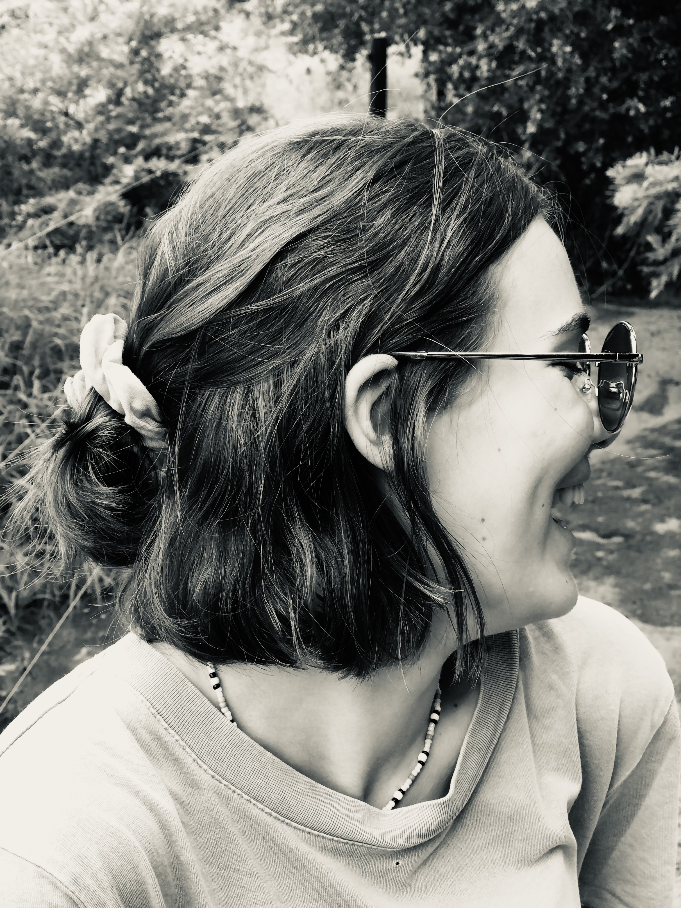
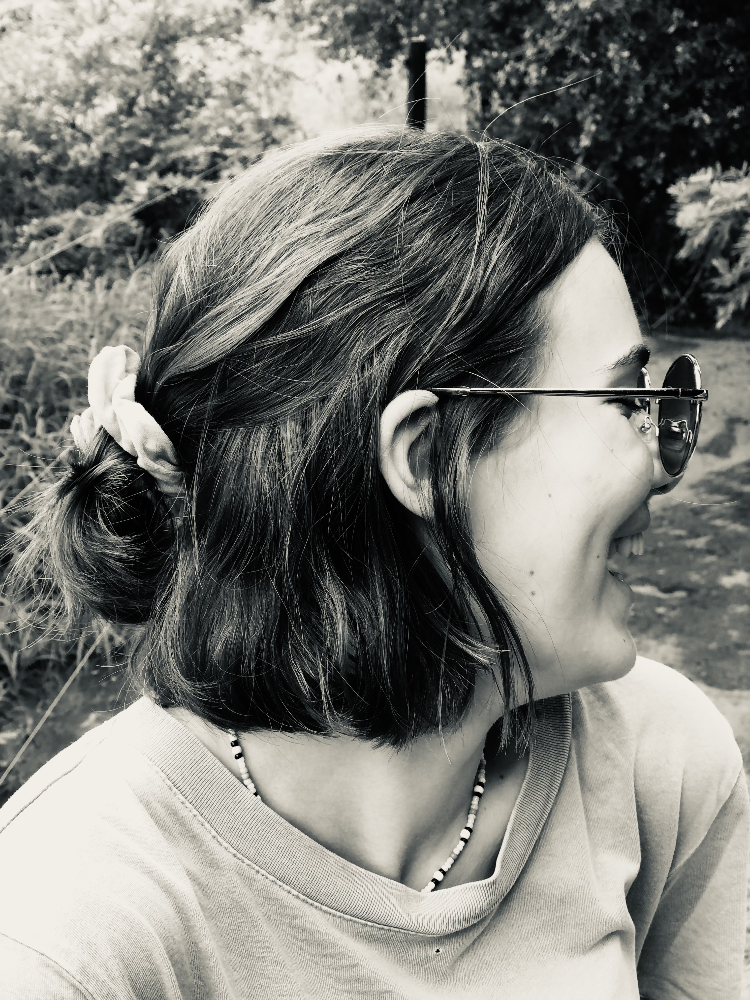

Follow along on Instagram :)
@rebekah_howell_art 


Nov 2024 | Charcoal Drawing
The whole truth. Combining everyone’s truth to create the ultimate truth. This drawing is part of learning to understand who I am. It is not always a beautiful or perfect story, yet it is the truth—Whole Truth—of who I am. This is me.
May 2024 | Charcoal Drawing
The blank spaces highlight the struggle of never fully grasping the full truth. It is always INCOMPLETE... this piece is a take on not feeling what is true, not seeing what is pure and truthful, not speaking what is true, and not hearing the truth. We tend to feel, see, speak, and hear what society says is true; we must lean on what is right and true in our hearts.
July 2023 | Charcoal Drawing
From cotton to denim to fashion to recycling. The journey is both immersive and complex. A journey of a denim garment. This is a fabric of grit. A symbol of resilience and wear. In a way, it echoes our own experiences and life journeys. Every crease, rip, and thread tells a story. This is called an immersive journey.
Aug 2022 | Charcoal Drawing
My role model.
My hero.
My grandma.
My grandmother has always been a quiet force in my life.
Her presence is grounding and her stories are rich in wisdom and love.
This piece is in a way holding her still in time, even as time moves forward.
This is my tribute to her, and to the generations she carries within her and those to come.
July 2021 | Various Mediums

Using a mirror and different techniques to create several self-portrait pieces. Each piece captures a different technique and version of who I am - or who I've been - in moments of clarity, doubt, strength, and weakness. By shifting techniques, I allow myself to shift perspectives. These pieces are of how I feel about being me - fluid, evolving, and whole.